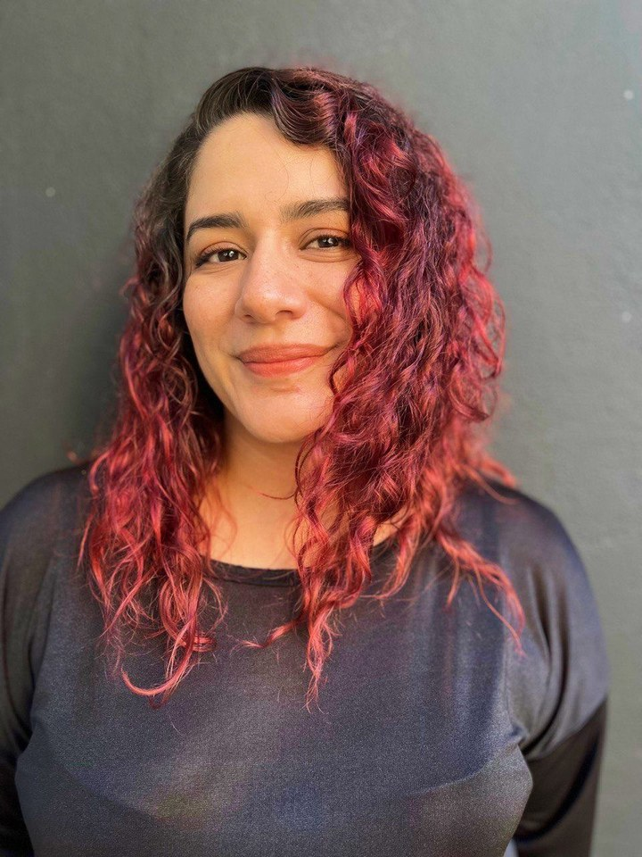
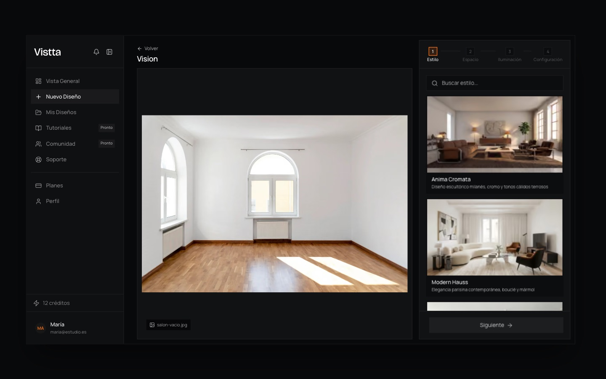
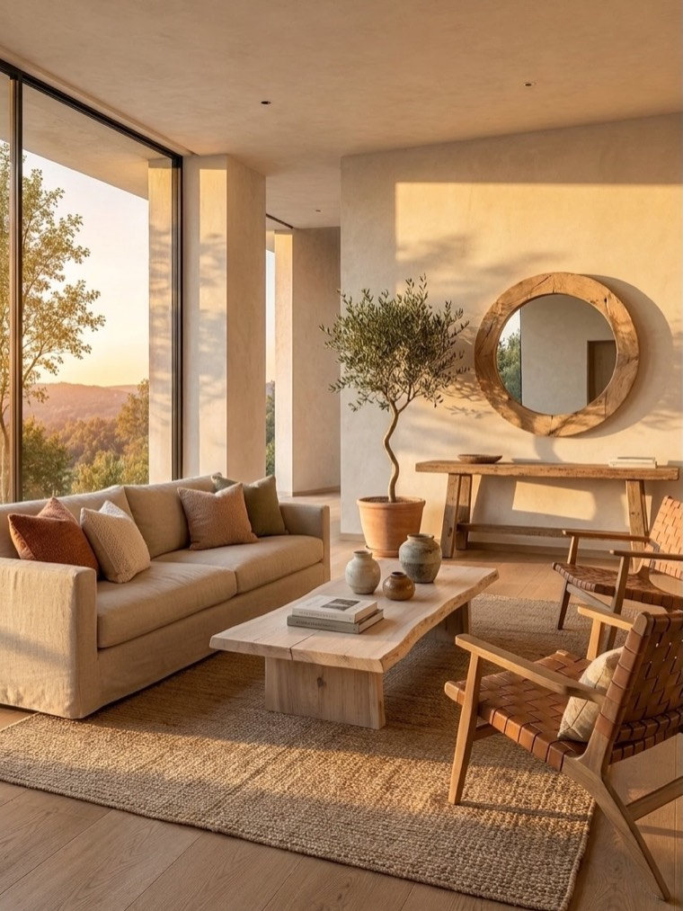
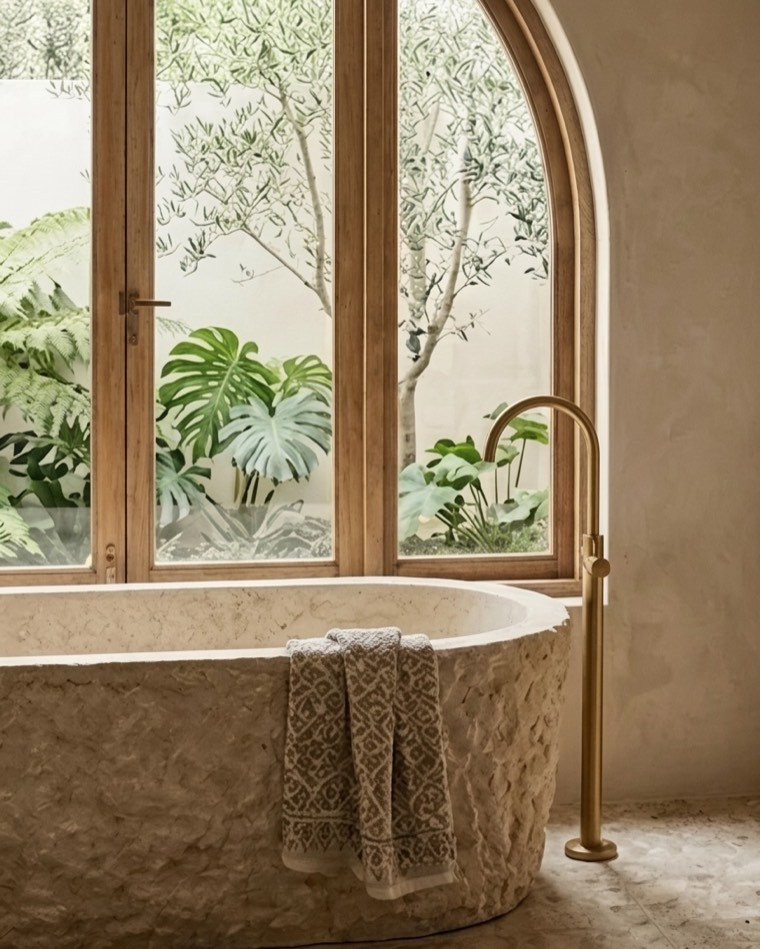
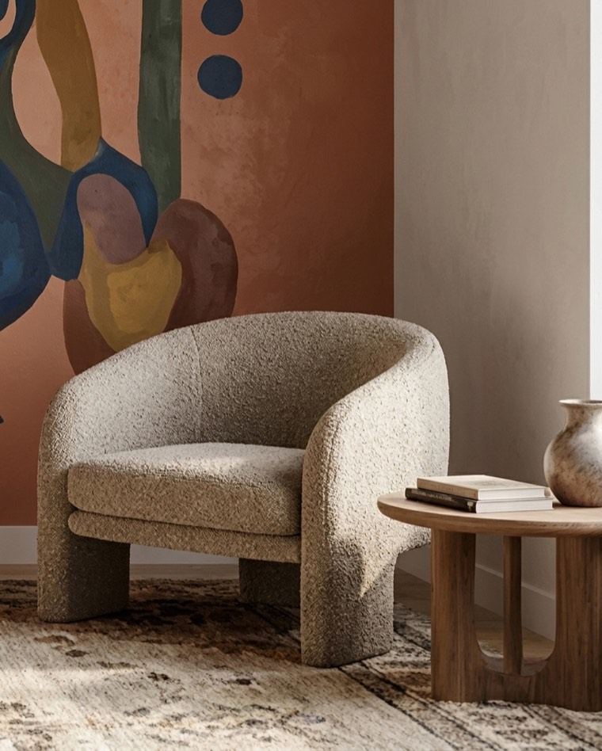
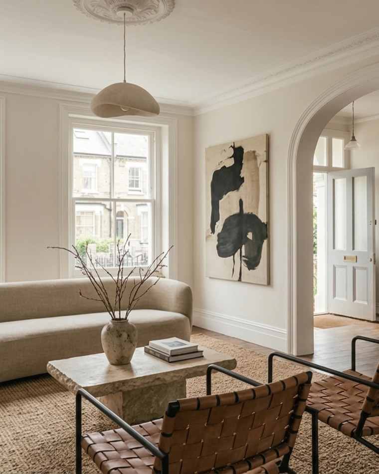
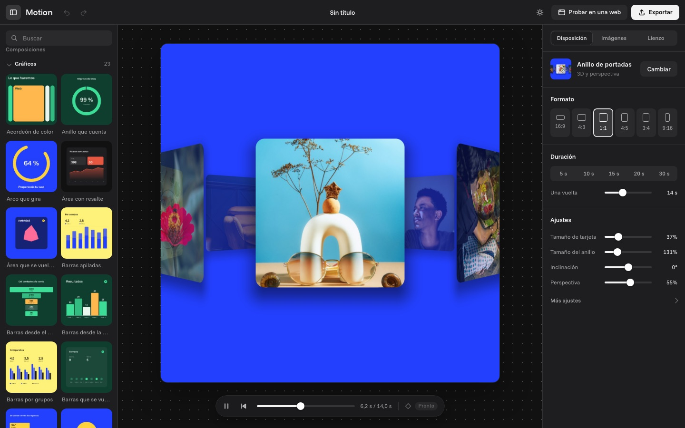
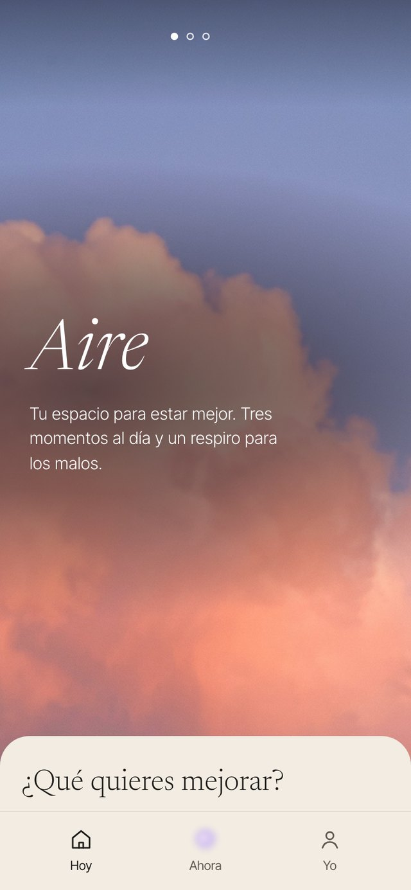
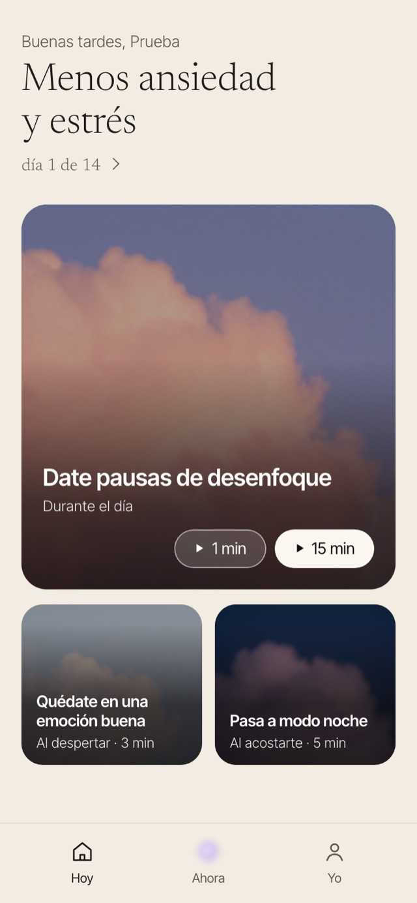
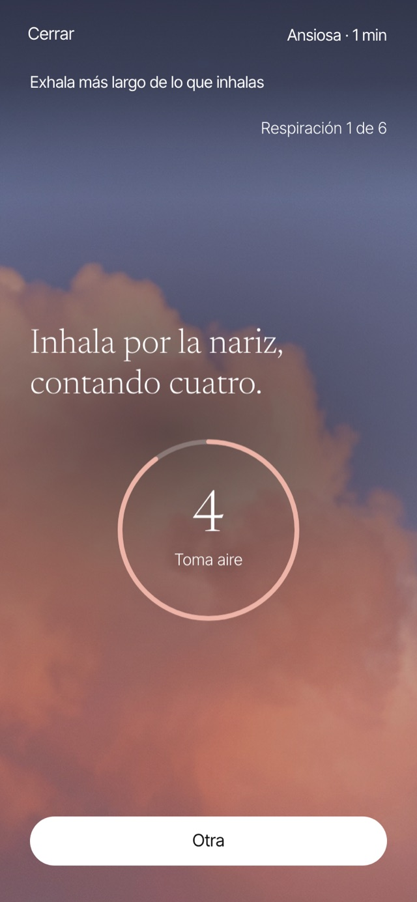

Hi, I’m Yaz
I’m a digital creative designer. I design brands, websites and social media content.

My background combines marketing and digital product design.
AI lets me take an idea all the way through, including the parts that used to depend on technical skills or on more time than I had. That frees me to focus on the human side, on creativity and on exploration.
- Design
- FigmaAdobe Creative CloudWebflow
- AI & Automation
- AI agentsClaude CodeMidjourneyNanoBananaRunwayElevenLabsn8nMake
- Video
- CapCut
Vistta
SaaS product and AI-generated images
A platform that turns a photo of an empty room into a professional render for real estate agencies and architecture studios.


Meta Ads campaign
Two of the videos we used in Vistta’s ads on Instagram and Facebook.




- The challenge
- An empty room shows little of what it could become. Real estate agencies and studios need to show that potential to their clients without furnishing every space.
- The solution
- An app where you upload a photo of the room and get furnished proposals back, along with a website that presents the product.
- What I did
- I was involved from start to finish: research, UX/UI for the website and the app, SEO, art direction, social media content and Meta Ads campaigns.
- AI in the process
- Image generation with Midjourney, NanoBanana and Runway, with many rounds of iteration until the results were believable.
The website and the entire SaaS are built with AI agents configured specifically for the project.
Motion
A library of animated templates to customise
An in-house tool that adapts each animated piece to social media and ad formats.

- The challenge
- Adapting the same piece to every format, message and audience is repetitive work that takes up many hours of a creative team’s time.
- The solution
- You pick an animated template, adjust the palette, typography, photo and format, and the variant is ready to publish.
- What I did
- Design direction for the template catalogue, the palettes, the typography and the photo selection.
- AI in the process
- The tool is built with AI agents that I configured and directed.
Aire
Built in a week
A wellbeing app that guides you through 90+ science-based practices and helps you turn them into habits.




- The challenge
- There are many practices that help you feel better. In a moment of anxiety it can be hard to remember which one might help, and keeping them up over time takes consistency.
- The solution
- “Ahora” (Now) offers a guided practice based on how you feel in that moment, especially when it feels urgent.
“Hoy” (Today) suggests up to three a day so that repeating them is easy, with the aim of growing them into habits. - What I did
- Concept, research, UX/UI, copywriting and art direction.
- AI in the process
- I built the app with AI agents that I configured and directed, and used AI to generate the visual assets (the sky images). I went from idea to production in under a week, with four versions tested in real use.
Websites
Websites designed and developed for brands in Spain, Mexico and the United States.


Valencia, Spain